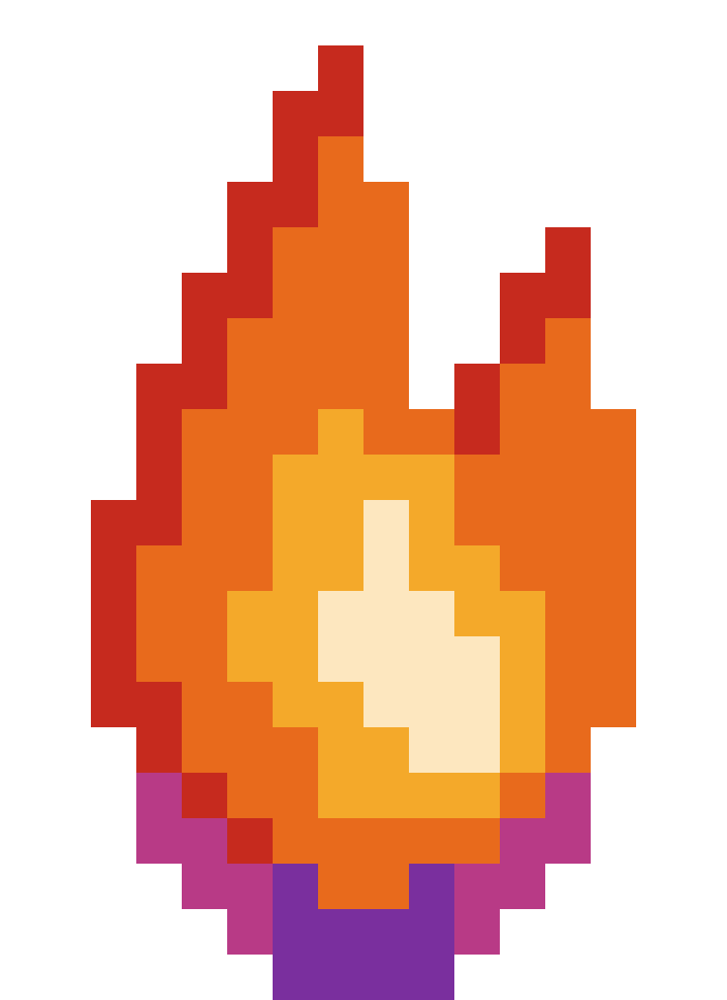

Pixel-art, canon palette, organic silhouette. (Triangles retired.)
Four flicker rhythms built from the three flame frames with variable per-frame timing (long holds + quick darts) so the fire feels alive and the loop point isn't obvious. Each runs 1–2 s and repeats. Watch a few seconds, then tell me a letter.

v1 was smooth-vector triangles — wrong idiom (FRWC is pixel-art) and too geometric.
This redraw is a hand-placed pixel flame using the actual Sacred Flame colour zones from the NFT:
crimson licking tips → orange body → white-hot core → a violet/magenta glow pooling at the base. No rounded
strokes, no outline — it glows against the dark like the real one. Pixel art also scales crisply and is
genuinely authorable (unlike the grunge-textured hero icons, which want AI-gen — see ICON_PROMPTS.md).
A 3-frame pixel-fire loop (ping-pong at ~130ms) — this is the splash / loading / hearth-rune version.
Ship it as inline SVG with the tiny frame-cycler below, or bake the frames into a CSS steps() sprite.
Respects prefers-reduced-motion (holds frame 1).
Pixel art holds its edges at every integer scale. The 32px render is the favicon sweet spot; 16px works but simplify one more step for a true 16×16 export.
The flame reads best on near-black, exactly like the NFT in the Secret Tower basement.
The NFT floats a faceted diamond beneath the flame. Optional — richer for splash/hero, drop it for the favicon.